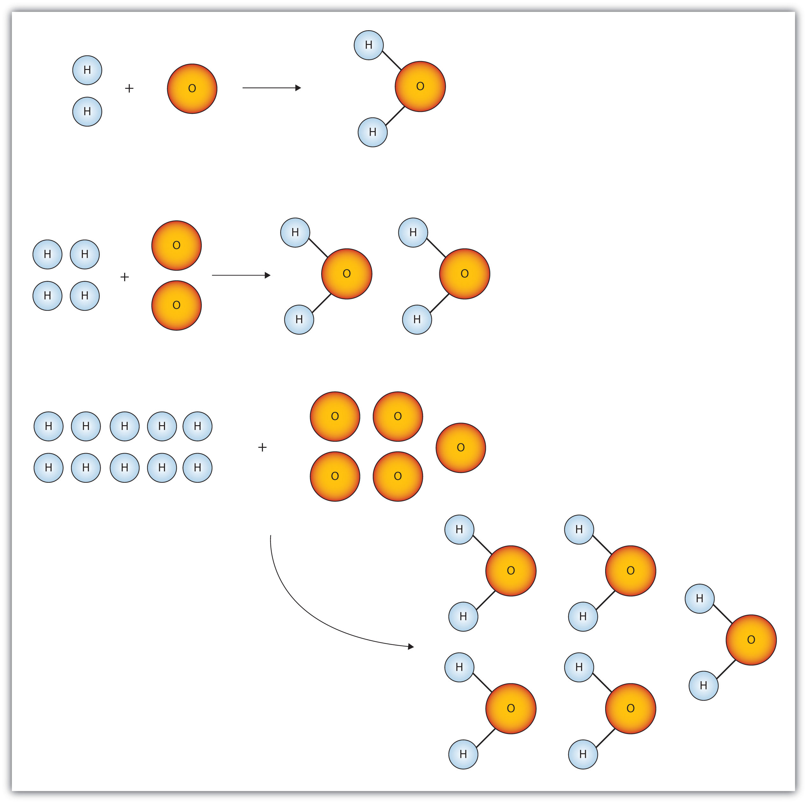

Figure 6.1 "Water Molecules" shows that we need 2 hydrogen atoms and 1 oxygen atom to make 1 water molecule. If we want to make 2 water molecules, we will need 4 hydrogen atoms and 2 oxygen atoms. If we want to make 5 molecules of water, we need 10 hydrogen atoms and 5 oxygen atoms. The ratio of atoms we will need to make any number of water molecules is the same: 2 hydrogen atoms to 1 oxygen atom.
Figure 6.1 Water Molecules
The ratio of hydrogen atoms to oxygen atoms used to make water molecules is always 2:1, no matter how many water molecules are being made.
One problem we have, however, is that it is extremely difficult, if not impossible, to organize atoms one at a time. As stated in the introduction, we deal with billions of atoms at a time. How can we keep track of so many atoms (and molecules) at a time? We do it by using mass rather than by counting individual atoms.
A hydrogen atom has a mass of approximately 1 u. An oxygen atom has a mass of approximately 16 u. The ratio of the mass of an oxygen atom to the mass of a hydrogen atom is therefore approximately 16:1.
If we have 2 atoms of each element, the ratio of their masses is approximately 32:2, which reduces to 16:1—the same ratio. If we have 12 atoms of each element, the ratio of their total masses is approximately (12 × 16):(12 × 1), or 192:12, which also reduces to 16:1. If we have 100 atoms of each element, the ratio of the masses is approximately 1,600:100, which again reduces to 16:1. As long as we have equal numbers of hydrogen and oxygen atoms, the ratio of the masses will always be 16:1.
The same consistency is seen when ratios of the masses of other elements are compared. For example, the ratio of the masses of silicon atoms to equal numbers of hydrogen atoms is always approximately 28:1, while the ratio of the masses of calcium atoms to equal numbers of lithium atoms is approximately 40:7.
So we have established that the masses of atoms are constant with respect to each other, as long as we have the same number of each type of atom. Consider a more macroscopic example. If a sample contains 40 g of Ca, this sample has the same number of atoms as there are in a sample of 7 g of Li. What we need, then, is a number that represents a convenient quantity of atoms so we can relate macroscopic quantities of substances. Clearly even 12 atoms are too few because atoms themselves are so small. We need a number that represents billions and billions of atoms.
Chemists use the term moleA number of things equal to 6.022 × 1023 items. to represent a large number of atoms or molecules. Just as a dozen implies 12 things, a mole (mol) represents 6.022 × 1023 things. The number 6.022 × 1023, called Avogadro’s numberThe value 6.022 × 1023. after the 19th-century chemist Amedeo Avogadro, is the number we use in chemistry to represent macroscopic amounts of atoms and molecules. Thus, if we have 6.022 × 1023 O atoms, we say we have 1 mol of O atoms. If we have 2 mol of Na atoms, we have 2 × (6.022 × 1023) Na atoms, or 1.2044 × 1024 Na atoms. Similarly, if we have 0.5 mol of benzene (C6H6) molecules, we have 0.5 × (6.022 × 1023) C6H6 molecules, or 3.011 × 1023 C6H6 molecules.
A mole represents a very large number! If 1 mol of quarters were stacked in a column, it could stretch back and forth between Earth and the sun 6.8 billion times.
Notice that we are applying the mole unit to different types of chemical entities. In these examples, we cited moles of atoms and moles of molecules. The word mole represents a number of things—6.022 × 1023 of them—but does not by itself specify what “they” are. They can be atoms, formula units (of ionic compounds), or molecules. That information still needs to be specified.
Because 1 H2 molecule contains 2 H atoms, 1 mol of H2 molecules (6.022 × 1023 molecules) has 2 mol of H atoms. Using formulas to indicate how many atoms of each element we have in a substance, we can relate the number of moles of molecules to the number of moles of atoms. For example, in 1 mol of ethanol (C2H6O), we can construct the following relationships (Table 6.1 "Molecular Relationships"):
Table 6.1 Molecular Relationships
| 1 Molecule of C2H6O Has | 1 Mol of C2H6O Has | Molecular Relationships |
|---|---|---|
| 2 C atoms | 2 mol of C atoms | or |
| 6 H atoms | 6 mol of H atoms | or |
| 1 O atom | 1 mol of O atoms | or |
The following example illustrates how we can use these relationships as conversion factors.
If a sample consists of 2.5 mol of ethanol (C2H6O), how many moles of carbon atoms, hydrogen atoms, and oxygen atoms does it have?
Solution
Using the relationships in Table 6.1 "Molecular Relationships", we apply the appropriate conversion factor for each element:
Note how the unit mol C2H6O molecules cancels algebraically. Similar equations can be constructed for determining the number of H and O atoms:
If a sample contains 6.75 mol of Na2SO4, how many moles of sodium atoms, sulfur atoms, and oxygen atoms does it have?
The fact that 1 mol equals 6.022 × 1023 items can also be used as a conversion factor.
How many formula units are present in 2.34 mol of NaCl? How many ions are in 2.34 mol?
Solution
Typically in a problem like this, we start with what we are given and apply the appropriate conversion factor. Here, we are given a quantity of 2.34 mol of NaCl, to which we can apply the definition of a mole as a conversion factor:
Because there are two ions per formula unit, there are
in the sample.
How many molecules are present in 16.02 mol of C4H10? How many atoms are in 16.02 mol?
What is a mole?
A mole is 6.022 × 1023 things.
How many dozens are in 1 mol? Express your answer in proper scientific notation.
A gross is a dozen dozen, or 144 things. How many gross are in 1 mol? Express your answer in proper scientific notation.
How many moles of each type of atom are in 1.0 mol of C6H12O6?
How many moles of each type of atom are in 1.0 mol of K2Cr2O7?
How many moles of each type of atom are in 2.58 mol of Na2SO4?
How many moles of each type of atom are in 0.683 mol of C34H32FeN4O4? (This is the formula of heme, a component of hemoglobin.)
How many molecules are in 16.8 mol of H2O?
How many formula units are in 0.778 mol of iron(III) nitrate?
A sample of gold contains 7.02 × 1024 atoms. How many moles of gold is this?
A flask of mercury contains 3.77 × 1022 atoms. How many moles of mercury are in the flask?
An intravenous solution of normal saline may contain 1.72 mol of sodium chloride (NaCl). How many sodium and chlorine atoms are present in the solution?
A lethal dose of arsenic is 1.00 × 1021 atoms. How many moles of arsenic is this?
5.018 × 1022 dozens
6.0 mol of C atoms, 12.0 mol of H atoms, and 6.0 mol of O atoms
5.16 mol of Na atoms, 2.58 mol of S atoms, and 10.32 mol of O atoms
1.012 × 1025 molecules
11.7 mol
1.04 × 1024 Na atoms and 1.04 × 1024 Cl atoms